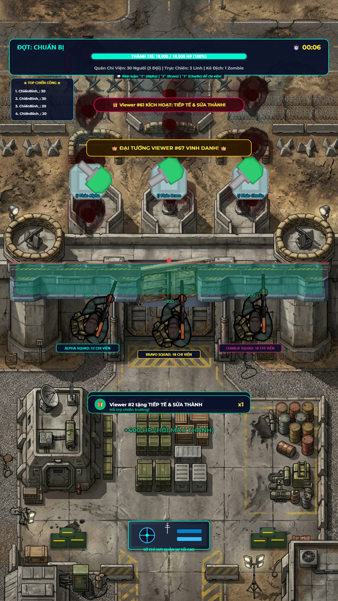
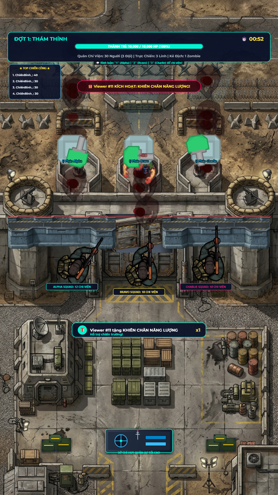
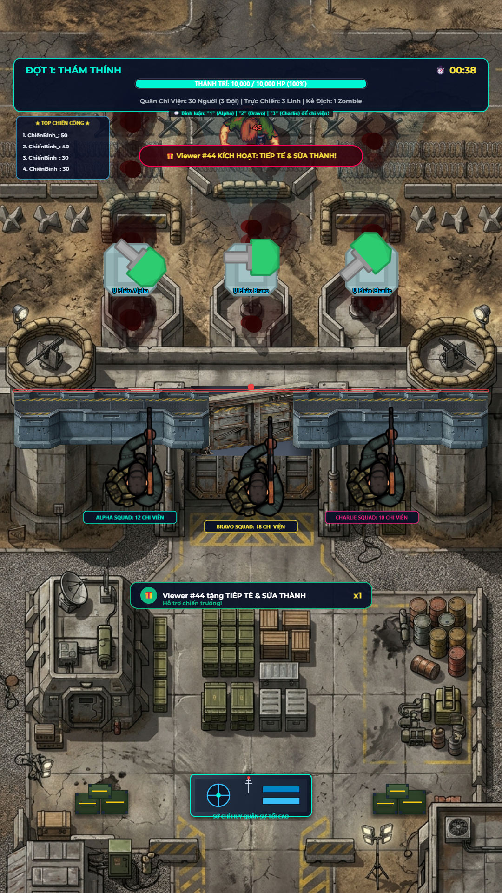
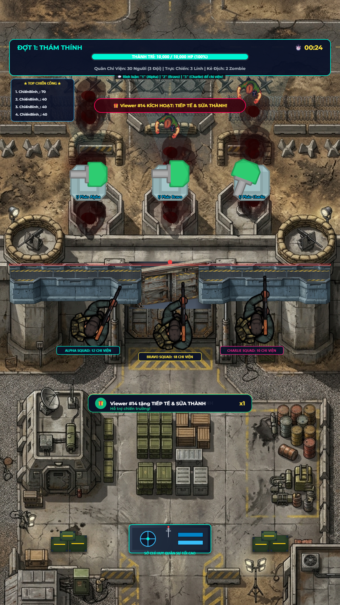
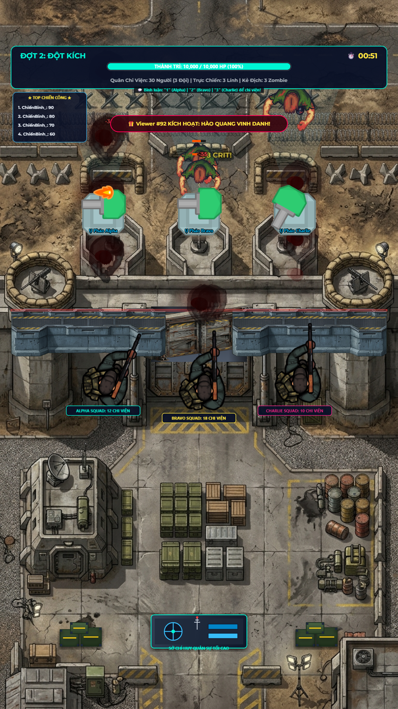
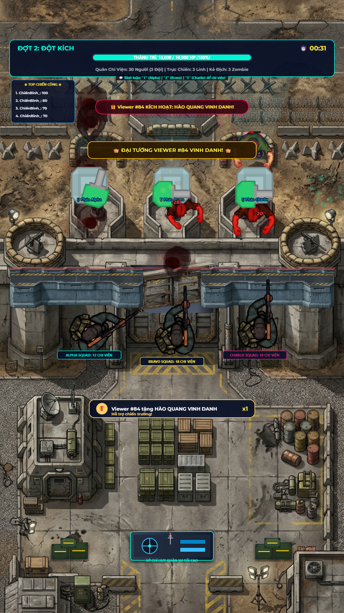
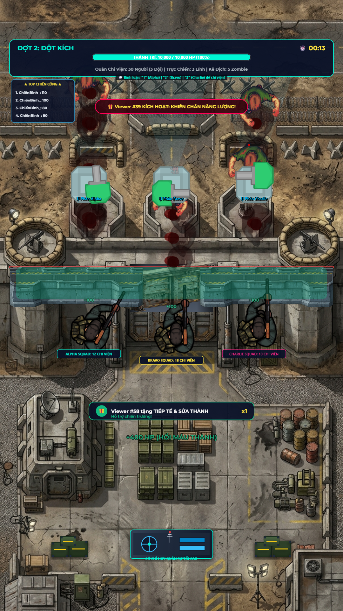

1. Video Ghi Hình Gameplay Thực Tế (138 Giây - 1080×1920 60FPS)
Ghi hình trực tiếp từ phiên Playwright chạy trên nền tảng Chromium độ phân giải dọc 1080×1920 portrait.
2. Bộ Sưu Tập 8 Ảnh Chụp Màn Hình Nghiệm Thu Trực Quan (1080×1920 PNG)

01. Zombie Wave Attack
Đợt zombie tiếp cận ranh giới phòng thủ (y ~ 840), phân loại Walker, Runner, Tanker với thanh HP riêng.

02. Join & Squad Assignment
Người xem gia nhập được tự động chia đều vào ALPHA (Đỏ), BRAVO (Xanh dương) và CHARLIE (Xanh lá).

03. BAN Combat Feedback
Hiệu ứng tia đạn phát hỏa từ các ụ súng phòng thủ và chữ số sát thương nổi (-20, -50) trên zombie mục tiêu.

04. SUA Repair Feedback
Hiệu ứng sửa chữa cổng thành (+15 HP), hạt tia lửa cơ khí hàn thép và phục hồi độ bền pháo đài.
05. Galaxy Airstrike Detonation
Kỹ năng Gift Galaxy: Vòng cảnh báo đỏ bán kính 320px phát nổ hạt ánh sáng diện rộng, quét sạch bầy zombie.

06. Shield & Turret Overclock
Vòm khiên năng lượng bán nguyệt bảo vệ pháo đài và hào quang ép xung tốc độ bắn của ụ tháp pháo.

07. Leaderboard & Fortress HP
Bảng vinh danh Top người đóng góp tích cực nhất trận đấu và thanh trạng thái pháo đài trung tâm.

08. TikTok Safe Zone Layout
Bố cục 9:16 dọc tối ưu, toàn bộ thành phần chiến sự được định vị nằm ngoài khu vực che khuất của giao diện TikTok LIVE.
3. Hướng Dẫn Cấu Hình OBS Studio
Cách Thêm Browser Source Vào OBS:
Trong OBS Studio, tạo Scene mới hoặc chọn Scene hiện tại.
Bấm + (Add Source) → Chọn Browser.
Đặt tên: Zombie Defense Overlay → Bấm OK.
Nhập thông số cấu hình:
URL:http://localhost:5174/overlay
Width:1080
Height:1920
FPS:60
Shutdown source when not visible:Bỏ chọn
Refresh browser when scene becomes active:Chọn
4. Danh Mục Tồn Đọng Kỹ Thuật Trước Production (Engineering Backlog)
1. Engine Mutation Return Handling Trong Startup Replay: Khi replay lệnh `APPLIED` sau checkpoint, cần xử lý chi tiết hơn giá trị trả về của engine để đối chiếu tính nhất quán sâu của simulation state.
2. Hard Process Kill Fault Injection: Tự động hóa kiểm thử `taskkill /F /PID` ngay giữa thời điểm engine mutation và database commit để xác nhận khả năng phục hồi dữ liệu trong điều kiện mất điện/sập nguồn đột ngột.
3. Telemetry Continuous Measuring vs Fallback: Thay thế hoàn toàn các giá trị fallback trong telemetry bằng luồng ghi log chỉ số liên tục (rolling memory, real CPU/GPU utilization, tick jitter).
4. Visual QA Assertions Tự Động: Tích hợp Pixelmatch / Computer Vision để phát hiện chính xác các hạt hiệu ứng (VFX particles, Airstrike ring, Shield dome) thay vì dựa vào mốc thời gian chụp ảnh.